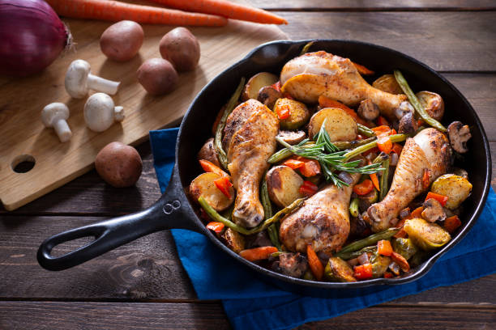

Chicken Skillet Recipe

Description
Chicken is one of the easiest dishes to make. It has a little cooking time and depending on what you intend to make,
the preparation time is also little. Making skillet chicken is especially convenient
if someone wants flavorful food, but does not want to spend a lot of time in the kitchen.
The dish also requires very few ingredients. It can be taken with or without a side dish. Some people
prefer taking this chicken with a salad while others can go all out with a side dish. Despite your preference
you are in for a juicy and flavorful treat. The recipe below can serve four individuals.
Ingredients
- 1 full chicken cut in pieces
- 1/2 teaspon salt
- 1 tablespoon black pepper
- 1 tablespoon garam masala
- 1 tablespoon of herbs
- 1 cup of cooking cream
- 2 tablespoons of lemon juice
- 1 lemon diced in circles
- 3 carrots diced in circles
- 1 tablespoon honey
<1i>1 diced onion
- 2 tablespoons cooking oil
- Fresh rosemary
Steps
- Place chicken in a bowl
- Take smaller bowl and mix ingredients starting with cooking cream.
Add herbs, garam masala, black peppper, honey, salt and 1 tablespoon of cooking oil.
Stir until everything mixes well. Add lemon juice and continue stirring
- Add the mixture into the bowl with the chicken pieces and mix
- Cover and chill in the refrigerator for an hour
- After the hour is over, take the chicken and add to a skillet
- Add cooking oil, cover and let it simmer on medium heat for 15 minutes
- Add onions and let the meal simmer for five minutes
- Add the remaining cooking cream, stir, and place diced carrots,rosemary and
lemons on the sides and top in a presentable manner
- Turn off the heat and serve while hot. You can take it individually or with a side dish